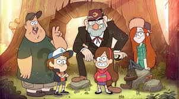
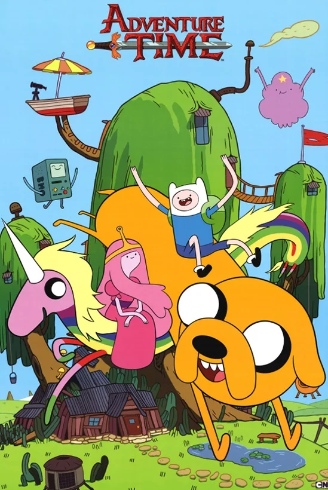
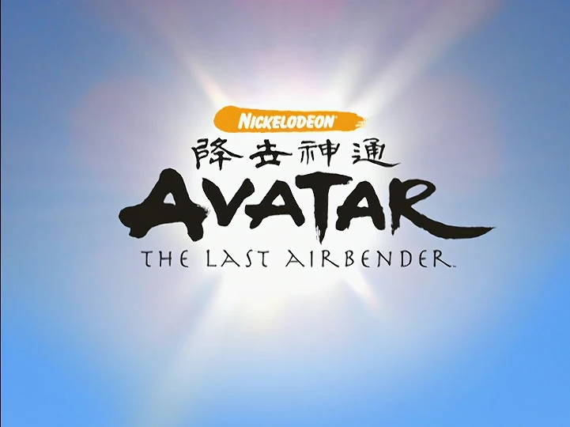
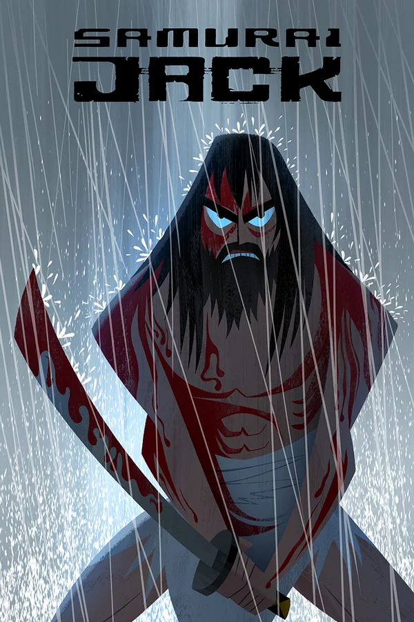
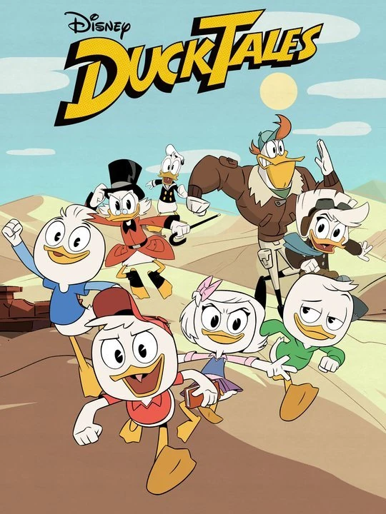
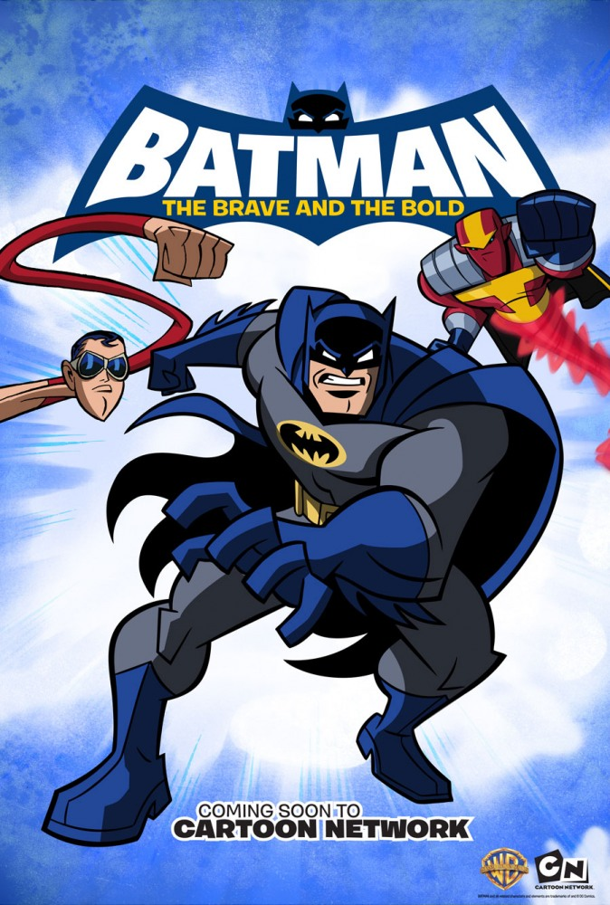

İzləyici reytinqi : “Kinopoisk” - 9.0, IMDb - 8.9
Janr : komediya, detektiv, macəra, ailə, fantaziya
Nə qədər müddət : 2 mövsüm, 41 epizod
Yaş reytinqi : 12+

İlk sezondan bəri tarixdə qarışıqlıq var: sirli sirli simvolu olan gündəlik, göy qurşağını qusduran gnomlar və Loch Ness canavarı. İkinci mövsümə qədər yüngül yumoristik şou pərəstişkarlarını müxtəlif nəzəriyyələr və təxminlər qurmağa məcbur edən detallar əldə etməyə başladı. Onlar o zaman nə qədər dəli görünsələr də, əslində cizgi serialının süjeti daha çılğın olduğu ortaya çıxdı. Hekayədəki bütün personajlar, davam edən bakanaliyaya baxmayaraq, hərtərəfli işlənib hazırlanmışdır, baxmayaraq ki, onlar klişe və klişelərlə doludur. Layihə bir yeniyetmə layihəsi kimi yaradılıb, lakin asanlığı və xoş yumoru sayəsində böyüklər onu bəyənəcəklər.
Baxış reytinqi : Kinopoisk - 8.3, IMDb - 8.6
Janr : fantastika, fantaziya, aksiyon, komediya, macəra, ailə
Nə qədər : 10 mövsüm, 290 epizod
Yaş reytinqi : 16+

Əvvəlcə elə görünə bilər ki, söhbət şən bir uşaqdan gedir cizgi seriyası, amma əslində bu böyümək haqqında bir layihədir və göy qurşağı krallığının arxasında xarabalıqlar var. Aksiya post-apokaliptik dünyada baş verir. Əsas personajlar oğlan və onun itidir. Müəllif Pendleton Ward hekayəni təsir edici detallarla bəxş etmişdir: sadəcə olaraq çoxlu duyğuları ifadə edə bilən və eyni zamanda heç nə ifadə etməyə qadir olan personajların boş gözlərinə baxın. Qeyd etmək lazımdır ki, "Macəra vaxtı" filmi spesifikdir və hər kəs üçün uyğun deyil, lakin Hayao Miyazaki üslubunda qeyri-standart animasiya, sürrealizm və rəsm layihəyə vaxt ayırmağa dəyər.
Baxış reytinqi : Kinopoisk - 8.7, IMDb - 9.3
Janr : fantaziya, fəaliyyət, macəra, ailə
Nə qədər müddət : 3 mövsüm, 61 epizod
Yaş reytinqi: 6+

"Avatar" tipik uydurma olmasına baxmayaraq, təkcə uşaqların deyil, uşaqların da xoşuna gələcək bir hekayədir. dünya. Yaradıcılar seriala gülməli vəziyyətlər, gözlənilməz süjet dönmələri, xoş animasiya və yaxşı düşünülmüş məntiqi personajlar bəxş ediblər. Süjetə görə tamaşaçı dörd ünsürə görə dörd millətə bölünmüş dünya ilə tanış olur. Avatar hər kəsə bir anda əmr verir və bu vəziyyətlə tamamilə razılaşmayan xalqlar arasında tarazlığı saxlamağa çalışır. Çarpıcı soundtrack və gözəl vizuallarla birləşən serial istinadlar və dərin fikirlərlə heyran edir.
Baxış reytinqi : Kinopoisk - 8.7, IMDb - 9.3
Janr : fantaziya, fəaliyyət, macəra, ailə
Nə qədər müddət : 3 mövsüm, 61 epizod
Yaş reytinqi: 6+

"Avatar" tipik uydurma olmasına baxmayaraq, təkcə uşaqların deyil, uşaqların da xoşuna gələcək bir hekayədir. dünya. Yaradıcılar seriala gülməli vəziyyətlər, gözlənilməz süjet dönmələri, xoş animasiya və yaxşı düşünülmüş məntiqi personajlar bəxş ediblər. Süjetə görə tamaşaçı dörd ünsürə görə dörd millətə bölünmüş dünya ilə tanış olur. Avatar hər kəsə bir anda əmr verir və bu vəziyyətlə tamamilə razılaşmayan xalqlar arasında tarazlığı saxlamağa çalışır. Çarpıcı soundtrack və gözəl vizuallarla birləşən serial istinadlar və dərin fikirlərlə heyran edir.
Baxış reytinqi : Kinopoisk - 8.4, IMDb - 8.3
Janr : elmi fantastika, uşaq, fantaziya, aksiya, komediya, detektiv, macəra, ailə
Nə qədər : 3 mövsüm, 75 epizod
Yaş reytinqi: 6+

Düzünü desək, Scrooge McDuck-un sərgüzəştləri və ən yaxşı serial cizgi filmlərinə gəldikdə onun qardaşı oğullarını sadəcə bir kənara qoymaq olmazdı. Bu, 1987-ci ildə eyni adlı layihənin yenidən başlamasıdır - cizgi seriyası 2D formatında çıxdı və məşhur ailənin quldurlarla toqquşması, xəzinələrin axtarışı və uzaq keçmişin sirlərini həll etməsindən bəhs etdi. Bir çox pərəstişkarının yenidən başlama xəbərini mənfi qarşılamasına baxmayaraq, serial xoş sürpriz edə bildi və kifayət qədər yüksək reytinq aldı. Ancaq bu, həqiqətən gərgin və qaranlıq olduğu ortaya çıxan sonluqla izah edilə bilər.
Baxış reytinqi : Kinopoisk - 8.0, IMDb - 7.5
Janr : fantaziya, fəaliyyət, detektiv, macəra, ailə
Nə qədər müddət : 4 mövsüm, 85 epizod
Yaş reytinqi: 12+

Warner Bros. Animasiya öz animasiya imkanlarını nümayiş etdirməyi bacardı. Layihə düşünülmüş personajları, qəşəng vizualları və orijinal üslubu sayəsində pərəstişkarları qazandı: Gotham Tim Burton filmlərinin üslubunda təqdim olunur və qara elementlərlə seyreltilir, qəhrəmanın özü isə komikslər aləmindən ayrılmayıb və onun bir hissəsidir. Sonradan "Batman" dünyaya bir çox orijinal ideyalar və personajlar bəxş etdi və dörd Emmy mükafatı qazandı.